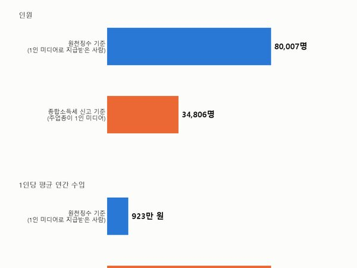
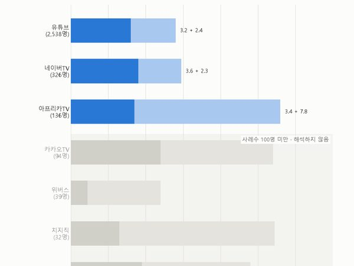

뉴스에 나온 숫자, 공공데이터 원본으로 다시 봐요.
출처랑 한계도 같이 적어 둬요일·이직종합
개발자는 그대로인데, 신입 자리만 줄었어요
일하는 사람은 그대로인데 새로 들어가는 사람만 줄었어요. 지금 1년 차가 적으면 3년 뒤 3년 차도 적을지, 그게 궁금해졌어요.


청년 취업자가 줄었다는데, 20대 후반은 1년 전만큼 일해요
줄어든 청년 취업자 넷 중 셋은 사람 수가 줄어든 데서 나왔어요. 일하는 비율이 내려간 곳은 막 일을 시작하는 20대 초반이었어요.

유튜버 평균 수입은 왜 923만 원도 되고 7,100만 원도 될까요
같은 '평균 수입'도 누구를 세느냐에 따라 8배 가까이 달라져요.

유튜브 보는 100명 중 채널 주인은 3명이에요
유튜브를 보는 사람은 많아도 지금 만드는 사람은 드물어요. 해 봤다가 내려놓은 사람까지 합쳐도 5.6%예요.
일·이직
더 보기
돈·자산
더 보기카드 한 번 긁을 때 쓰는 돈, 20년 전의 절반도 안 돼요
한 번에 크게 쓰던 카드가, 조금씩 자주 쓰는 카드가 됐어요.
10년 전 1만 원 장바구니, 지금은 얼마일까요
장바구니에 담는 먹거리 값이 전체 물가보다 두 배 가까이 빨리 올랐어요.
빚 빼고 남은 재산, 8년 새 30대 가구가 가장 덜 늘었어요
30대가 가구주인 가구는 빚이 더 빨리 늘고 순자산은 더 느리게 늘었어요. 2022년보다 순자산이 줄어든 건 이 나이대뿐이에요.
집 가진 가구는 늘었는데, 30대 가구는 6년째 줄었어요
전체 숫자가 가장 높은 해에, 30대 가구는 10가구 중 3.6가구만 집이 있어요. 같은 통계 안에서 방향이 갈렸어요.
디지털·크리에이터
더 보기
가족·사회
더 보기창업·자영업
더 보기새 글 나오면 받아 보기
피드 리더 앱에 이 사이트 주소를 한 번 넣어 두면, 새 글이 올라올 때 앱에 떠요. 가입이나 메일 주소는 필요 없어요.
받는 법 보기
- 피드 리더 앱을 하나 골라요. 새 글을 모아 보여 주는 앱이에요. 예를 들면 Feedly나 Inoreader가 있어요. 둘 다 무료고 웹·휴대폰에서 써요.
- 앱에서 '구독 추가'(+)를 누르고 아래 주소를 붙여 넣어요.
- 끝이에요. 새 글이 올라오면 앱 목록에 떠요.
https://protofu.github.io/opendata-insight/feed.xmlFeedly를 쓴다면 여기를 눌러 바로 추가할 수도 있어요.